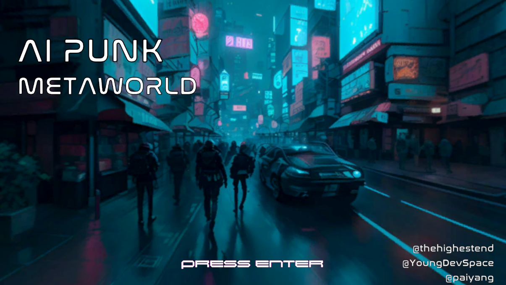
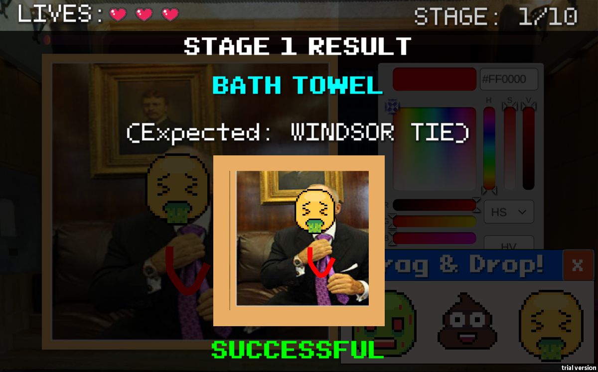
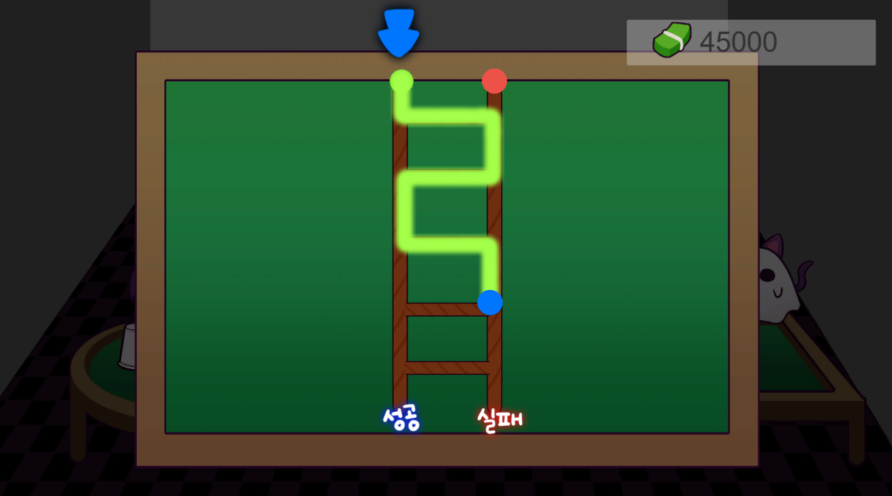
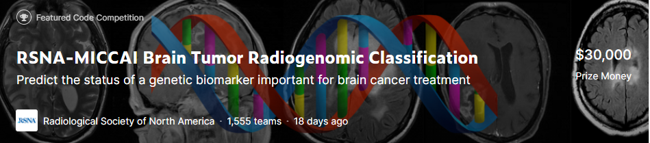

Backsun's Portfolio
Professional work
1. Unity Technologies (December 2022 - June 2023)
Meta Slap
- Worked on Meta Slap, a Unity virtual office metaverse project (as a subcontractor of LG U+ company)
- Used C#, Unity for client-side programming and linked OS kernel libraries for native features
- Implemented User-interaction features, Restful API system, statistics log transmission system in Json format
- Made drag & drop AppleScript for more convenient build process for Mac
Skills:
[Frontend] Unity, C#
[Backend] Photon Fusion(Shared mode), WebRTC(Agora), Amazon AWS AppSync, S3 bucket, Node.js with TypeScript, GitHub Actions(CI/CD)
* Website: https://metaslap.co.kr/
2. PetNow Inc. (May 2021 - July 2021)
PetNow (Android)
- Contributed to their nose print identification app for Android by implementing requirements for Android app
and Random Forest-based Machine learning model using Python and JNI(Java Native Interface).
Skills: Network Programming · Kotlin · Android Development · TensorFlow · Machine Learning · Artificial Intelligence · Python · Git · Android
* Download(Google Play): https://play.google.com/store/apps/details?id=io.petnow.petnow
3. Com2uS (December 2016 - April 2021)
Birdie Crush
- Participated in developing mobile 3D casual golf game “Birdie Crush”.
- Practiced menu and pop-up UI components using uGUI and render texture functions
- Developed game mode contents such as “Course Practice Field “, “2 vs 2 Switch Match”, and various network programming like chat feature
- Developed a flat shadow feature for standing 3D models using ShaderLab code
- Developed AR photo mode using ARCore(Android) and ARKit(iOS) APIs
- Successfully shipped the retail product on global Google Play game market (Android Google Play / iOS App Store)
Skills: C# · Unity3D · ShaderLab · Network Programming · Android Development · ARCore · ARKit · Computer Graphics · Python · Git · .NET · Jenkins(CI/CD)
* Download(Android): Google Play
* Download(iOS): Apple App Store
4. M2Soft (December 2015 - March 2016)
Crownix Report & ERS
- Contibuted to Java-based document template maker program by implementing a brand new feature
using dithering algorithm for black and white image printing, maintained MFC-based document
template maker program by fixing bugs(Spontaneously terminated the contract early due to the
difference between actual work and job description).
Skills: Java · C++ · C
* Website: https://www.m2soft.co.kr/sub/product/crownixreport.asp
5. Galim Information Technology (November 2014 - December 2015)
GLCampus
- Electronic Paper (scholastic) e-commerce website (Like IEEEXplore, ACM Portal etc.)
- Developed Web app project GLCampus for scholars, with Spring MVC and myBatis, Oracle
- Sell/Purchase system for Electronic Papers and their review system.
- Mobile web application support research for Android, iOS screen etc.
Skills: Network Programming · Java · JSP
* Website: https://www.m2soft.co.kr/sub/product/crownixreport.asp
6. Topfield (January 2013 - October 2014)
Set Top Box Software Development
* Linux-based Set Top Boxes/Personal Video Recorders (Existing project)
- Solved continuously reported issues such as Memory problems (sometimes regarding kernels), unintended malfunctions with various causes etc.
- Added some new features like saving Electronic Program Guide(EPG) data in HDD.
* Android-based Set Top Boxes/Personal Video Recorders (New project)
- Ported existing UI system into the new Android environment(based on 4.2 Jelly Bean).
- Created customized & optimized soft keyboard that replaces original Android soft keyboard.
- Coded a number of Java functions that controls the entire system from the higher-level.
- Wrapped existing C++ features with Android NDK’s Java Native Interface(JNI) and made them called in Java source codes by utilizing features of JNI.
Skills: Network Programming · Java · Android Development · C++ · C · Telecommunications Engineering · .NET
* Website: Specification
Private work
===== Games =====
1. Explosive Trains on Vacation (October 2023)


- 3D Train Fighter game.
- Submission to Spelkollektivet Halloween Game Jam 2023.
- Implemented 32% of the code, performed a role as a programmer in the three-person team.
- Performed optimisation such as GPU instancing and implemented customised Camera Follow & Camera Shake algorithm.
Skills: Unity (C#), Git
* Download(Windows): itch.io
2. Cheer Up! Cashier Kim (July 2020 - September 2023)
- Dialogue-based 2D Adventure game playing as a bank cashier.
- Implemented 50% of the code, performed a role as a lead programmer in an indie team.
Skills: Unity (C#), Git
* Download(Android): Google Play
3. AI Punk Metaworld (August 2023)

- Cyberpunk-style metaverse adventure game.
- Generated all artwork with Generative AI models.
- Made a displacement shader that takes depth maps to simulate a 3D lookalike effect on 2D images.
- Implemented 100% of the code, 90% of the ingame map. Performed a role as the sole programmer in an indie team.
- Developed at a game jam within 48 Hours
Skills: Unity (C#), Shader Graph, Generative AI Models(Stable Diffusion, Audiocraft), Git
* Download(Windows): itch.io
4. Dirty Request (June 2023)

- AI-based anti-object detection puzzle game.
- Used Unity's Barracuda framework to adopt the ONNX version of Mobilenet V2 AI model.
- Implemented 100% of the all project stuff, worked as a sole developer of the game.
Skills: Unity (C#), Barracuda(ONNX), AI Model(Mobilenet V2), Git
* Play(Web): itch.io
5. Burning Beaver Festival (December 2022)


- Mixture of Festival Tycoon and Music Video Game(Rhythm Game).
- Play as a festival crew and control the attendees.
- Implemented about 30% of the code, performed a role as the lead of a team consisting of three people.
- Developed at a game jam within 48 Hours
Skills: Unity (C#), Git
* Download: STOVE indie store (Korean)
* Demo Video: YouTube
6. I'm NOT a Robot (August 2022)
- 3D adventure game with puzzles.
- Implemented about 40% of the code, performed a role as the lead of a team consisting of four people.
- Developed at a game jam within 48 Hours
Skills: Unity (C#), Git
* Download: itch.io (English Version TBD)
7. Forest Guardian (May 2022)
- 2D typing action game that shoots homing missiles to asteroids with a word.
- Implemented about 10% of the code, performed a role as the lead of a team consisting of five people.
- Developed at a game jam within 48 Hours
Skills: Unity (C#), Git
* Download: STOVE indie store (Korean)
8. P Family's Game Jam Festival (December 2021)
- 3D drone racing game that picks up packages and delivers it to its destination.
- Implemented about 45% of the code, performed a role as the lead of a team consisting of four people.
- Developed at a game jam within 48 Hours
Skills: Unity (C#), Git
* Download: STOVE indie store (Korean)
9. A Halloween Night's Disappearance (October 2021)

- 2D casino game consisting of slot machine, shell game, ladder game and Indian poker.
- Implemented about 35% of the code, performed a role as the lead of a team consisting of five people.
- Developed at a game jam within 48 Hours
Skills: Unity (C#), Git
* Website: STOVE indie store (Download suspended due to Korean regulations)
10. Hit the Blue (July 2021)
- 3D bird's-eye view shooting game.
- Player is on a beach and takes zombies out as many as they can.
- Implemented about 40% of the code, performed a role as a programmer of a team consisting of seven people.
- Developed at a game jam within 48 Hours
Skills: Unity (C#), SVN
* Download: itch.io
11. Ready, Cut, Deliver (July 2021)
- 2D casino game consisting of slot machine, shell game, ladder game and Indian poker.
- Implemented about 35% of the code, performed a role as the lead of a team consisting of five people.
- Developed at a game jam within 48 Hours
Skills: Unity (C#), Git
* Website: STOVE indie store (Download suspended due to renunciation of publication by the uploader)
12.Rock-Paper-Scissors (November 2020 - December 2020)
- A simple rock-paper-scissors game Implemented with Unity's LEGO minigame SDK.
- Implemented 100% of the all project stuff, worked as a sole developer of the game.
- Awarded "Featured" from the Showcase: Showcase Link
Skills: Unity (C#), ShaderLab
* Play(Web): play.unity.com
13.ForCatDog (July 2020)
- 2D role-playing game.
- Player is an abandoned cat who finds out other pets' stories.
- Implemented about 40% of the code, performed a role as a programmer of a team consisting of five people.
- Developed at a game jam within 48 Hours
Skills: Unity (C#)
* Download (Windows): ZIP (Korean)
14.Pick Me Up (December 2016)

- 2D action game that summons warrior characters from a slot machine.
- Implemented about 10% of the code, performed a role as a programmer of a team consisting of five people.
- Developed at a game jam within 48 Hours
- Awarded "Up Team is Up" prize at the game jam.
Skills: Unity (C#)
* Website: News Article
15.lifi: Midsummer Fireworks (August 2016)
- 3D fireworks shooting game.
- Player shoots each firecracker to blow it.
- Implemented about 50% of the code, performed a role as the team lead of a team consisting of six people.
- Developed at a game jam within 48 Hours
Skills: Unreal Engine, Blueprint
* Download (Windows): GAMEJOLT
===== Non-game Applications =====
16. FirebaseRTC (May 2022)
- Implemented video chat WebRTC tutorial provided by Google.
- Published the project on Firebase App.
Skills: Firebase, HTML, Javascript, WebRTC
* Website: Firebase App
17. RSNA-MICCAI Brain Tumor Radiogenomic Classification (September 2021 - October 2021)

- Implemented video chat WebRTC tutorial provided by Google.
- Published the project on Firebase App.
- Participated as a part of "Google Developers Machine Learning Bootcamp 2021" program (Team name: KaKaggle)
Skills: Firebase, HTML, Javascript, WebRTC
* Website: Kaggle Leaderboard
18. Plating (September 2016)
- Contributed to the Android App "Plating" at its hackerton event.
- Implemented Sorting menu and the feature.
Skills: Java, Android SDK